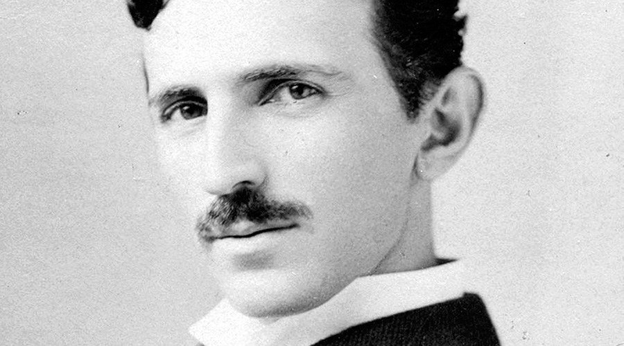

Nikola Tesla

The man behind the future of electrical energy
- 1856 Born in Smiljan, Croatia
- 1875 Tesla Enrolled at Austrian Polytechnic in Graz, Austria. He aced all of his exams and received a letter of recommendation from the dean of faculty to his father, which stated "Your son is a start of first rank"
- 1879His father (who was an orthodox priest in the village of Smiljan) passed away aged 60.
- 1822-1892-His mother, Duka Tesla, had a talent for making tools and Mechanical appliances. Along with this, she had the ability to memorise Serbian epic poems. Tesla credited his eidetic memory and creative abilities to his mother.
- 1881 Tesla moved to Budapest, Hungary. He worked under Tivadar Puskás at a telegraph company.
- 1886 AC and the induction motor
- 1898 Tesla demonstrated a radio-controlled boat which he hoped to sell as a guided torpedo to navies around the world
- 1904 The Tesla's Wardenclyffe plant was built on Long Island. From this facility Tesla hoped to demonstrate wireless transmission of electrical energy across the Atlantic.
- 1937 Tesla won numerous medals like the University of Paris Medal
- 1943 Dies in New York City at the age 86
Here's a timeline of Nikola Tesla:
"If your hate could be turned into electricity, it would light up the whole world." Nikola Tesla